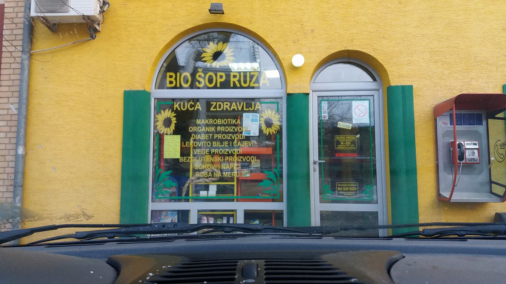

Stručnost
Naši saveti su zasnovani na najnovijim naučnim istraživanjima.

Verujemo da zdrava ishrana ne mora biti komplikovana ni skupa. Naš zadatak je da svakome pružimo razumljive informacije, jednostavne recepte i podršku stručnjaka — kako bi promene koje napravite ostale s vama doživotno.
Naši saveti su zasnovani na najnovijim naučnim istraživanjima.
Sadržaj prilagođen svim uzrastima i nivoima znanja.
Svaki klijent dobija individualan pristup i razumevanje.